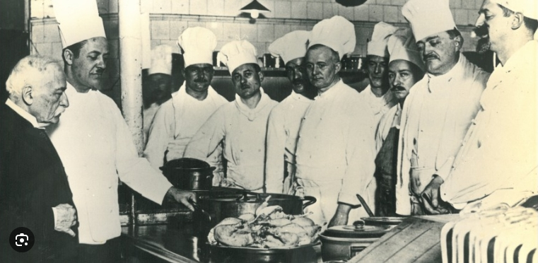
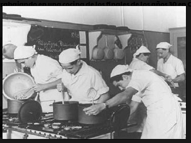

Nuestra Historia
Fundada hace más de 50 años, nuestra sociedad gastronómica y cultural tiene como misión promover la cultura culinaria y el intercambio cultural. A lo largo de los años, hemos organizado eventos, talleres y concursos que han unido a personas con pasión por la cocina y el patrimonio cultural.
Momentos Memorables

Fundadores de la sociedad gastronómica en la primera reunión oficial, 1972.

Primer evento gastronómico oficial, donde se presentó la receta de nuestro famoso estofado, 1975.

Celebración del 25º aniversario, una reunión especial para nuestros miembros y amigos, 1997.